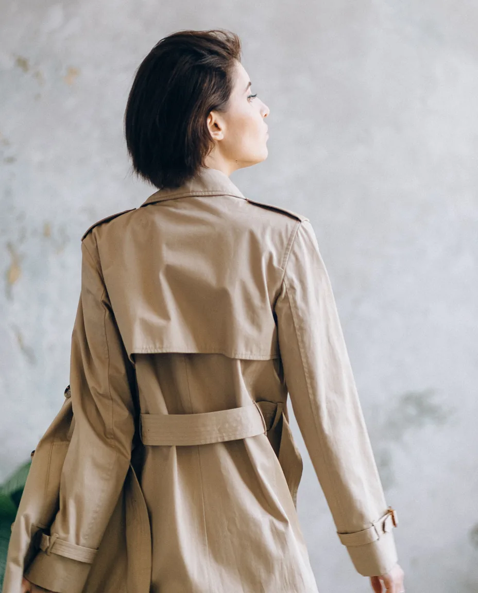

There is a particular kind of quiet that belongs to a room you have made your own. It has nothing to do with silence. It is the sound of things being exactly where they ought to be.
Ours is not a grand room. The window sticks a little in the summer, and the old floorboards have a voice of their own. But the light is generous, arriving in a long, unhurried stripe each afternoon. We have learned to plan around it.
A room to return to
We started ATELIER with an idea that felt almost too simple to say out loud: make pieces that leave room for a person to be themselves. Not a uniform. Not a costume. A good shirt that sits just right, a coat that feels like an open door.
“The things we keep close are rarely the loudest. They are the ones that make the ordinary feel a little more like our own.”

The everyday ritual
Most mornings begin with coffee and a small negotiation with the weather. We dress for the day as it is, not as we planned it. A soft layer, something with a little structure. And enough room to move through whatever comes next.
Maybe that is what a wardrobe can offer: not a new self, but a little more ease with the one already here.